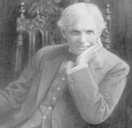
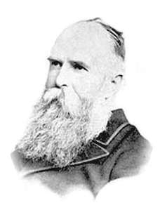
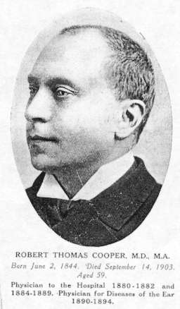
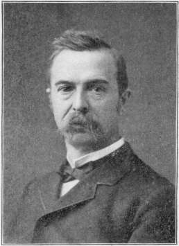
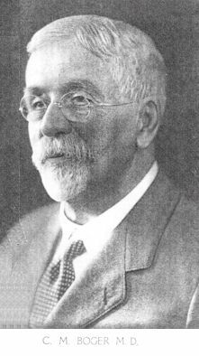
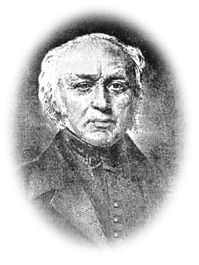
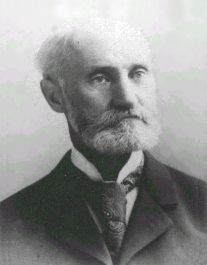
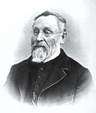

THE PRESCRIBER
by John Henry Clarke
Presented by Médi-T.Main * A * B * C * D * E * F * G * H * I * J * K * L * M * N * O * P * Q * R * S * T * U * V * W * Y * Z
Preface. * Introduction : How to practise homeopathy - Case-taking - The plan of the Prescriber and how to use it - List of remedies, abbreviations and signs * Toothache : Repertory and Reversed Repertory.
INTRODUCTION TO THE PRESCRIBER.
PART I. - HOW TO PRACTISE HOMEOPATHY.
1. Necessary Implements.
2. Comparative Value of Symptoms. The Prescriber and Clinical Repertory. Cases in point.
3. The Dictionary of Practical Materia Medica.
4. Bœnninghausen's Pocket Book.
5. The Scope of Clinical Repertories.
6. Kinds and Degrees of Similarity.
7. Hahnemann's Doctrine of Chronic Diseases.
8. The Genius Epidemicus.
9. The Homœopathic Materia Medica.
10. Symptom Repertories.
11. Various Materia Medicas.
1. NECESSARY IMPLEMENTS.
 THE completion of my Dictionary of Practical Materia Medica and of its Clinical Repertory since the sixth edition of The Prescriber appeared, enables me to give more full directions to my readers than I could before as to the best way to approach the study and practice of homœopathy. I have therefore decided to add to the former introductory portion of The Prescriber a separate essay, which I think will prove useful alike to the student who is desirous of acquiring the homœopathic art and to the practitioner who has had to be content hitherto with fragmentary implements.
The Prescriber was originally designed to put into convenient and accessible shape all the more salient indications for the use of homœopathic remedies from the clinical point of view. This is the approach which naturally first invites those who have been drilled in the practice of the ordinary schools. But homœopathy can never be properly practised by means of a clinical Index or Repertory (such as The Prescriber is in essence) unaided by other works. The homœopath must have his foundation authority always ready for instant reference. This authority is the Homœopathic Materia Medica.
It is of the greatest importance that a clear conception should be formed at the outset as to what the Homœopathic Materia Medica is. It is so unlike anything known as Materia Medica in the old school, that it is a pity, as I have pointed out below, that a different name could not have been found for it. The homœopathic materia medica consists of a Register of Symptoms. It is the Semiology of Drugs. For the practice of homœopathy we must know the symptoms which each drug has produced, and we must have these so arranged that they can be found instantly for any required region of the body. Hahnemann arranged them, for each of the remedies he tested, in a definite anatomical order, and this arrangement is the foundation of the order in which the symptoms are given in all works on the subject compiled since his day. This is named technically in homeopathy "The Hahnemannian Schema."
The homœopathic materia medica thus consists of a schematic arrangement of the symptoms produced by each drug, together with amplifications from the observed action of remedies in practice.
When I commenced the practice of homœopathy I found no little difficulty in the fact that the works on Materia Medica were too numerous and too scattered to be readily accessible. The only book which gave a comprehensive idea of the remedies contained in the homœopathic materia medica was Dr. Hughes's Pharmacodynamics ; but this work, whilst giving much information about homœopathic remedies, is in no real sense a homœopathic materia medica at all : it contains no Symptom Register of the remedies it speaks about, and yet, for better or worse, it has had to do duty for a materia medica for many practitioners ; and as its form is like that of the materia medicas of the old school, it has appealed very strongly to new converts.
It was the consciousness that something more was needed that impelled me to undertake the compilation of my Dictionary of Practical Materia Medica, which after sixteen years of labour saw the light. In this work I have given, as Hahnemann has done, the Symptom Register (or Schema) of each drug, which is the foundation of the work. In addition, I have given an introductory essay on each drug which enables the reader to apprehend its main characteristics. At the head of each remedy, under the heading, "CLINICAL," I have given a list of the principal diseases in which it has been used in practice. At this point I have linked the work to The Prescriber. Among the names of diseases given under this heading in the Dictionary, I have printed in italics those under which, in The Prescriber, the indications for this remedy will be found.
In the introductory article prefixed to the Symptom Register, or Schema, of each remedy, I have been able to condense the history of the work it has accomplished. In this way the Dictionary illustrates and illuminates the Schema and makes the study of the individual symptoms much more easy and interesting than it otherwise might be. Thus it comes about that the Dictionary comprises a whole library of clinical experiences which could only be reached otherwise by the expenditure of much time, labour, and research. Moreover, a great deal of it could not be found at all ; since it was gathered by myself in conversations from the great clinicians whom it was my privilege to know.
It has been a source of very great satisfaction to me that the work was immediately recognised on its appearance, by those best able to judge, as filling a place that had long remained unoccupied. On the other hand, the force of old habit is so strong that many who had contentedly settled down within the limits of older works have not seen the necessity of enlarging their borders and accepting the liberty which is within their reach. This is one reason why at this juncture I think it essential to draw attention to the way in which the study and practice of homœopathy may and should be approached.
There are many ways in which the practice of homœopathy may be approached ; some find one way more suited to their genius, some another. But I am writing now primarily for those who use The Prescriber, and will therefore take the approach by way of a Clinical Repertory.
I will suppose that my reader is one who has become convinced of the truth of Hahnemann's law, and of the efficacy of his method, and who wishes to avail himself of the power it puts into the hands of one who can use it ; and I will suppose, further, that The Prescriber has been put into his hands a, a ready instrument by means of which he can put its precepts to the test. With this book at his elbow he will be able to find, in a case of any disease, the remedies that are most generally appropriate, with their differential indications. In most cases he will be able to find a remedy which fits with tolerable closeness of similarity the case it question, and will thus be enabled to prescribe. But it will sometimes happen that the differential symptoms named in The Prescriber are not sufficient to enable a choice to be made with due certainty. In that case if reference is made to the Materia Medica, the actual symptoms of the different remedies can be studied in full, and compared with each other.
At this point it is necessary to mention the Clinical Repertory to the Dictionary of Materia Medica. This is a "Clinical" Repertory and much more besides, as I shall explain later. But it is different from The Prescriber in two respects : it names far more remedies under each heading, and it gives no differential indications. In the Clinical Repertory, under each rubric, the remedies mentioned in The Prescriber will be found printed in italics, and those not mentioned therein, in Roman type. It is thus a complement of The Prescriber, giving a greatly extended list of remedies under each rubric, and reference to the Dictionary of Materia Medica will supply the necessary information to enable the practitioner to make a choice among them. The Prescriber and the Clinical Repertory together provide as complete an approach as is possible, I think, to homœopathic practice, from the clinical aspect.
But, after all, this is only a limited approach-that is, it is an approach to a limited area of the field. It is the glory of Hahnemann that he liberated medical practice from its bondage to the names of diseases. Every case of disease is a problem in itself -presenting a new combination of morbid phenomena ; the symptom-lists of the homœopathic materia medica presenting the possibility of finding similar combinations under one or other of the remedies named. Clinical repertories form one out of many of the means of fitting the remedy to the case.
2. THE COMPARATIVE VALUE OF SYMPTOMS. "THE PRESCRIBER" AND THE "CLINICAL STORY." CASES IN POINT.
Before proceeding farther it will be well to make clear that some symptoms or disease-manifestations are of much more value than others from the point of view of selecting the remedy ; and it often happens that those symptoms which are of the greatest value in correctly naming the disease, are of the smallest value in diagnosing the remedy. It will be noted throughout The Prescriber that in distinguishing one remedy from another great attention is paid to the Times and Conditions under which the various symptoms are better or worse--ameliorated or aggravated. (The sign ">" is used to indicate amelioration, and the sign "<" aggravation.) This point is often of more consequence than the actual symptom itself. And yet these characteristics would give little or no help in the diagnosis of the disease.
Perhaps it may help in understanding the differential value of symptoms and their Conditions or modalities if I instance a case. Miss T., 60, consulted me on October 7, 1908, about a pain which had troubled her more or less for twenty-five years. It affects the right side of the head and right cheek. In the temple are violent sharp shoots of pain. In the cheek it is a sudden pain, burning as if on fire. It is worst while eating ; worse by touch ; better after eating. It is worst if the patient is chilled ; and is sometimes worse at night.
In dealing with a case like this it does not assist us much whether we name the affection "neuralgia", "neuritis," or "Tic douloureux" -we must deal with it on the strength of its characteristic symptoms.
The first point of importance to note is the locality of the pain -it is one-sided, the side affected being the right.
The next point is -it is a sudden pain- violent, sharp, shooting, and burning. In this instance the nature of the pain is of importance on account of the peculiarity of suddenness.
The next point is the condition -aggravation by chewing, by the least movement or touch ; and the last point -aggravated at night.
If this patient had applied to an old-school practitioner all these details would have been useless to him ; all he would have needed to base his prescription on would have been the word "neuralgia." It would have signified nothing, so far as his prescription went, whether it was right side, left side, or both sides. It would not have mattered what made it better or what made it worse, or at what time of day it came on. To the homœopath these are everything.
Turning to The Prescriber, under the heading of "Neuralgia" will be found a number of remedies affecting the right side of the head and face, and among them this : "Sudden pains, especially of right side of the head and face, < by the least movement or touch, eating or speaking ; < 4 to 8 p.m., Lyc." Lycopodium 200 was prescribed, and two months later the patient wrote to say "the pain was relieved in a most wonderful way."
There are other ways in which this remedy might have been found besides consulting The Prescriber : it could have been found by the ordinary symptom repertories, and it could have been found by reference to the Materia Medica itself. The fact that the pain was on the right side of the head and face was enough to make any one but slightly acquainted with the homœopathic Materia Medica look up Lycopodium ; and a reference to the headings HEAD, FACE and TEETH would quickly reveal its appropriateness. It is impossible to carry all the symptoms of the Materia in one's head, but it is quite possible to remember a very large number of the characteristic symptoms and modalities (or Conditions) of the chief remedies. And after all, the best repertory any one can have is in his own memory. Only it must be possible to supplement it whenever required. Every remedy has a c umber of symptoms and modalities which are GENERAL in respect to it. That is to say, they qualify a very large proportion of its manifestations. So that when the practitioner meets with them in a patient he will be able to select the remedy even if the particular symptoms are not in precise correspondence.
And it is the same with patients. Many patients have GENERAL conditions which belong rather to themselves than to the particular complaint they may be suffering from, and when these am present they are often of greater importance from the prescribing standpoint than the actual symptoms of the disease. For instance, if the cardinal symptoms of Sulphur crop up in a patient-sinking at the pit of the stomach at 11 a.m. ; aggravation of the symptoms at night in bed ; hot hands and feet, burning on the soles, must put them out of bed to find a cool place -Sulphur will be the remedy for the patient, no matter what the nature of the disease may be.
Under the heading "CHRONIC DISEASES" in The Prescriber, I have indicated how this knowledge may be made use of in selecting remedies. In this way The Prescriber is something more than a mere clinical repertory -it is a repertory of localities. Under the different organs and parts of the body named will be found the remedies which have a specific relationship to them. Further, under the heading MIND will be found some leading mental symptoms and states, the presence of which, complicating bodily diseases-or, "concomitant" with them, as it is technically called in homeopathy-will point to the remedy to be selected.
I will now relate another case in illustration. J. P., 58, a coachman, was sent to me by his master on May 10, 1910. He had had severe domestic trouble, and was suffering from great mental depression, and, in addition, there was pain in the head. The pain was situated in the vertex, and was greatly aggravated if he was in the least worried.
The second of the five sections into which the Clinical Repertory to the Dictionary of Materia Medica is divided is a repertory of CAUSATION. It is often of great importance to know the cause in which every state has originated. The effects of a chill, physical injury or mental shock correspond to different remedies, and the knowledge of the cause is often an important guide in finding the remedy. On turning to this part of the Clinical Repertory, under the heading "Worry" will be found among the remedies Ignatia. As this patient had had much worry and as his complaint was aggravated by worry, Ignatia 30 was given. But it did no good. The reason of this failure was this -although worry was an exciting factor in the case it was not the fundamental cause. The complaint belonged to the patient himself. The condition now was ; head bad ; pain at vertex ; comes any time ; feels it for a time after getting into bed ; very low spirited. Hands and feet warm and moist.
On referring to the description of different constitutions under CHRONIC DISEASES in The Prescriber, it will be found that this patient corresponds to Sulphur in some of these characteristics : hot, perspiring hands and feet ; low spirits ; night aggravation. On referring to. Sulphur in the Materia Medica, under section HEAD it will be found that Sulphur has numerous pains referred to the vertex. On these indications Sulphur 30 was prescribed, with very speedy relief to all the symptoms.
But the improvement only went a certain way and then ceased. What next ? There is a section of the CLINICAL. REPERTORY which I think I use more than any other, and which I fear most of my readers have not learned to use, or feel the want of it is the section Of CLINICAL RELATIONSHIPS.
In the olden days when homœopaths had fewer remedies to commit to memory, each remedy was known much more intimately than it is at present. It was not only known as an entity in itself-it was known in its relations to its friends. For example, if Belladonna had relieved a case of inflammatory or congestive trouble and then ceased to help, the old homœopaths would know that one of the nearest relations to Bell., and one of its best friends, is Mercurius. And they would naturally think of Mercurius before any other to prescribe in the case. In mm Repertory of CLINICAL RELATIONSHIPS I have given in tabular form a list of all the relations of remedies so far as recorded. This shows at a glance which remedy follows any remedy well -which are followed well by it, which are compatible, which are complementary, which inimical, and which antidotal. These lists are not to be regarded as complete or exclusive, but as far as they go I find them most helpful and suggestive. And whenever I meet an instance in which one remedy helps out the action of another in a marked way I enter it on my list for future use, and this I advise my readers to do likewise.
This by the way. My patient now remarked that although he was much better in himself, he still had the pain in his head and it was worse when he had his hat on.
Referring now to The Prescriber under HEADACHE, it will be found that Lycopodium has a headache at the vertex which is worse when covered. Turning now to the CLINICAL RELATIONSHIPS of the CLINICAL REPERTORY it will be found that Lycopodium is one of the remedies which is compatible with Sulphur. Lycopodium 30 was now given, with complete relief of these symptoms. The patient's livery hat was heavy, so it was particularly trying in his employment.
The relief in this case continued for several months, when an attack of influenza brought back the old trouble. When the influenza was cured, the old head pain remained and Lycopodium only partially relieved it. What was next to be done ? Turn once more to the Repertory of CLINICAL RELATIONSHIPS under the reference, LYCOPODIUM. Among the remedies given as "complementary" -that is to say most closely related in action and helping out each other- is Chelidonium. A reference to the Materia Medica will show a dose similarity between the two remedies in their symptoms and Conditions. Chelid. 30 was given, and this completely relieved the patient.
Returning now to the former patient, Miss T., who suffered from neuralgia. In her case also Lycopodium failed on one occasion to control the pain, and here again the complementary remedy, Chelidonium, came to its aid and removed the whole trouble, and further illustrated the use of a repertory of Clinical Relationships.
In each of these cases pressure was a condition of aggravation. It is necessary to be able to reduce to its common denomination on the instant any symptom which a patient presents to you. Patients must not be expected to describe their sensations in the bald language of the repertories. A patient will be more likely to say "The pain is much worse when my hat is on," than he will to say "The pain is aggravated by pressure." In the same way a patient with right-sided sciatica will be more likely to say, "I can't bear to lie on my right side," than he will say. "The pain is aggravated by pressure." But it comes to the same thing, and many a case of right-sided sciatica with this modality have I cured with Lycopodium.
When The Prescriber fails to indicate the remedy required for any case, on turning to the same heading in the Clinical Repertory a large number of remedies not mentioned in The Prescriber will in most instances be found. For their special indications it will be necessary to turn to the Materia Medica and compare them one with another. In compiling the Materia Medica I was able to save much space, and consequently save my readers much trouble, by placing at the head of each article a list of the diseases to whose symptoms the drug corresponds. The necessity for much repetition was thus avoided, since the leading indications for any remedy are available in any disease, whatever may be its name, when these are prominent in a patient. But the list, nevertheless, gives a, good idea of the range of the drug's action ; and when the whole of these lists came to be indexed, as it is in the Clinical Repertory, it afforded at once a valuable approach to the Materia Medica from the clinical side and a greatly enlarged clinical instrument as compared with The Prescriber. It would be beyond the scope of the work to attempt to give the differential indications for each remedy in the Clinical Repertory as is done in The Prescriber ; just as it would be beyond the scope of The Prescriber to have included all the remedies named in the Clinical Repertory. But the lack of differential indications in the latter is no real loss, since the Materia Medica supplies them for ready reference and the study of the Materia Medica entailed in the use of it is pure gain. There is no road to the practice of homœopathy -whether it is the clinical road or the symptomatic road- which does not entail close and constant study of the Materia Medica.
I have already referred to the CLINICAL RELATIONSHIPS section of the Repertory and some of its uses. In homœopathic practice it is often necessary to modify or arrest the action of a remedy which has been administered. The means of doing this will be found in the Antidote column of this section. When more antidotes than one are given, the one which corresponds most closely to the symptoms of the case which it is desired to put an end to will be selected.
 The late Dr. R. T. Cooper found great assistance in his practice from utilising the natural relationship of remedies. For instance, when he had given with good effect a remedy belonging to a certain botanical species and the good action came to an end, his next choice was often a remedy from an allied species, which would carry on the action. In the Repertory these will be found for instant reference under the section of Natural Relationships.
The Repertory of Causation I have already mentioned ; this may be also used as a limited Repertory of Aggravation. Causation and Aggravation are not identical, but they frequently overlap.
The other section of the Clinical Repertory is the Repertory of Temperaments, Age, and Sex. In the selection of a remedy it often makes a great difference whether a patient is young or old, stout or spare, male or female, fair or dark, nervous or lymphatic. In this section of the Repertory all these points will be found indexed for ready reference.
I may mention a practical point which I have found a great time-saver. Wherever possible I block out on the front edges of my Repertories the different sections. In this way I am able to find with great ease the part I want to refer to without great turning over of pages.
3. THE DICTIONARY OF PRACTICAL MATERIA MEDICA.
 I should like to add here a few words in regard to my Dictionary of Practical Materia Medica. I do not offer it to the exclusion of any other author's work, but I do offer it as the most complete and perfect presentment of the homœopathic Materia Medica for the student and practitioner. It is the fruit of years of labour to combine within the compass of a single work the material needed for daily practice, arranged in such a form that all the sections of the information included are readily accessible and do not obscure each other. In my work it will not be found that one "cannot see the forest on account of the trees." The introductory part of each article gives the reader in the shortest compass possible, a picture of the whole drug with the history of the work it has done. So that the work is just as useful for the student as it is for the practitioner. I have seen it stated in lists of works recommended for students that my Materia Medica is a valuable book of "reference" -meaning by this that it is a book to be referred to now and then. It is more than that : it is a book for reference every hour of the working day ; it is a book for the study and the prescribing desk. It was compiled, first and foremost, for my own personal needs in practice -just as The Prescriber was- and I offer it as the greatest labour-saving and labour-rewarding materia medica for student and practitioner which we possess at the present day. With the Dictionary of Materia Medica, the Clinical Repertory, and The Prescriber it is possible too practise homœopathy -with works which only describe remedies without giving their actual symptoms this is not possible.
4. BŒNNINGHAUSEN'S "POCKET BOOK."
 The above-named three works I offer as a minimum stock in trade for the practitioner who wishes to do justice to his work. But I no less strongly urge on him to obtain other works as soon as ever he is able to introduce them into his armamentarium. And first among these is von Bœnninghausen's famous Pocket Book. The full title of this work is Therapeutic Pocket Book for Homœopathic Physicians to use at the Bedside and in the Study of the Materia Medica. This is, in a sense, the parent of all our Repertories and an analysis of the Materia Medica. The most convenient edition is Dr. T. F. Allen's, for it is in reality a "pocket" book.* [* Dr. Boger's large work, Bœnninghausen's Characteristics and Repertory, contains Bœnninghausen's characteristic Materia Medica as well as the repertories of all his works combined into one. It is a most valuable compilation, but it has not the portability and compactness of the Pocket Book.] This work carries analysis and generalisation as far as these can be carried, and forms a symptom index of the Materia Medica that is beyond price. My work has been to approach practice from the clinical side. Bœnninghausen's work approaches it from the symptomatic side. His Repertories of "Sensations" and of Aggravations and Ameliorations have been of enormous service to many generations of homœopathic practitioners and will be to many yet to be born. I urgently advise every reader to procure a copy and to read and reread Bœnninghausen's Preface -and, incidentally, I may say the same in respect to the prefaces of my own works to those who possess them. I will take the liberty of quoting here a passage of Bœnninghausen's Preface, which may give my readers a stimulus in their study of the Materia Medica ;-
 "In using the Pocket Book at the bedside," says Bœnninghausen, "much depends upon whether one is entirely a beginner, or is already somewhat skilled in homœopathy. But he who knows nothing whatever must, indeed, make a most careful search for everything without exception. The more he knows, the less he has to look for, and, finally only to use it here and there to help his memory. This may be best shown by an example : this I have taken for the purpose from my most recent practice, wherein the choice of the remedy was not difficult, and at first seemed very easy, though, through lack of attention a mistake might very easily have been made. This case may serve for a beginner in homœopathy to try his own skill.
E. N. of L., a man of about 50 years, of a blooming, almost florid complexion, usually cheerful, but during his more violent paroxysms inclined to outbreaks of anger with decided nervous excitement, had suffered for a few months with a peculiar kind of violent pain in the right leg after the previous dispersion allopathically of a so-called rheumatic pain in the right orbit by external remedies, which could not be found out ; this last pain attacked the muscles of the posterior part of the leg, especially from the calf down to the heel, but did not involve the knee or ankle-joint. The pain itself he described as extremely acute, cramping, jerking, tearing, frequently interrupted by stitches extending from within outward ; but in the morning hours, when the pain was generally more endurable, it was a dull burrowing with a bruised feeling. The pain became worse towards evening and during rest, especially after previous motion, while sitting or standing, particularly if he did it during a walk in the open air. While walking the pain jumped suddenly from the right calf into the left upper arm, if he put his hand into his coat pocket or his breast and kept the arm quiet, which was relieved by moving the arm, and then the pain suddenly jumped back son into the right calf. The greatest relief was experienced while walking up and down the roam and rubbing the affected part. The concomitant symptoms were sleeplessness before midnight, frequently recurring attacks in the evening of sudden flushes of heat with thirst without previous chill, a disagreeable fatty taste in the mouth, with nausea in the throat, and an almost constant pressing pain in the lower part of the chest and pit of the stomach as if something there was forcing itself outward.
No skilful homœopathist who is perfectly familiar with the action of his remedies will long remain in doubt as to the correct remedy in this case, with so complete and accurate a picture of the disease, for all these symptoms together correspond to a single one, which is thoroughly homœopathic ; but the beginner will be obliged to look for nearly every symptom and only after long search will he find the one most fit among the concurrent remedies. Between these two extremes of knowing and not knowing, lie many degrees of partial knowledge, which require a more or less frequent consultation of the book.
One person, for example, knows that the pains repeatedly changing from place to place, with the fatty taste in the mouth, the sleeplessness before midnight, and others of the symptoms mentioned belong especially to the action of Pulsatilla, but he is not sure whether the remaining symptoms also belong to it, and he will not, if he acts conscientiously, spare the trouble to compare these latter ; but he will soon see that Pulsatilla is not the correct homœopathic remedy, because, in addition to the mental symptoms there are others which are not similar, but, indeed, are directly contradictory to it.
Another person who has studied more the peculiarities of the pains distinctly remembers that China corresponds to the paralytic and bruised pains as well as to the jerking tearings, and the stitches from within outward and to the pains jumping from place to place. In addition, he believes that also symptoms like sleeplessness before midnight, the aggravation during rest, as well as the relief from motion and rubbing, together with the flushes of heat with thirst, correspond to this drug, but because he does not know, he also must consult the books ; and he will soon meet with contradictions, just as the previous one did, and he will see clearly the unfitness of China for the case.
Neither of these two, however, ever think of administering to the patient a remedy whose curative power in this case is so improbable ; but as conscientious homœopathic physicians they will look further and compare, and by the help of this book they will soon find, without great difficulty, the only really indicated homœopathic remedy.
But even a third physician, educated in homœopathy, one who recognises the contra-indications of Pulsatilla, China, and other concurrent remedies, does not know sufficiently that Valeriana corresponds to the chief symptoms, and in order to be perfectly sure about this rather infrequently used remedy, he will quickly look up the few doubtful symptoms, and convince himself that this drug among all the known medicines, is the best adapted to this case, as was proved by the result ; for after a single very small dose exhibited in a high potency in water, the whole trouble, with all the concomitant symptoms, was completely removed in three days."
I leave my readers, after perusing this case, to make up their minds as to which of Bœnninghausen's degrees of knowing and not knowing they consider that they belong.
In conclusion, I will repeat that there is only one road by which success in homœopathic practice may be attained, and the name of this road is -Work. It is only hard application, intelligent and unremitting, that can ensure success in the mastery of the infinity of details comprised in the homœopathic materia medica. The result is worth all the labour and very much more besides ; but I would seriously warn off at the outset all who think they will find in homœopathy an easy road to the cure of the sick. It is possible by the improvement of our instruments to make the practice of homœopathy less arduous than it is at present, but like every other great and good work it can never be made easy.
5. THE SCOPE OF CLINICAL REPERTORIES.
The Prescriber was designed primarily for the beginner in homœopathic practice by one who had felt the need of a work of the kind when he became convinced of the truth of the homœopathic law. As all British homœopaths receive their training in allopathic schools, it is inevitable that allopathic ways of looking at things should to a large extent prevail for some time after their graduation or conversion. In the old-school text-books remedies are considered in relation to diseases : in homœopathy remedies are considered first and foremost in relation to individuals. In homœopathy when the cardinal symptoms of a remedy are marked in any case, the name of the disease the patient may be suffering from is of no weight whatever in determining either for or against the selection ; the remedy which corresponds to the symptoms of the patient must be given, and if the case is curable it will cure. To give an example, I may relate a case as it was told to me. A patient suffering from pneumonia had gone from bad to worse under homœopathic treatment based on nosological lines, when it was decided to call in further help. The consultant on entering the room observed the patient shrink away from him in great fear. He found him collapsed and cold, with cold sweat on his forehead. He said to the other attendants that he would take their word for all the rest of the patients symptoms ; there was one medicine that would cure the patient and one only, and that was Veratrum album ; and Veratrum album very speedily did. Veratrum had not been given in the case before because it was not recognised by those in attendance as a pneumonia remedy. In a very severe case of pleuro-pneumonia of my own I rapidly cleared up all the dangerous symptoms with Stramonium, to which I was led by the delirium of the patient, in which he saw animals about his bed, and especially a large black dog. The patient was a youth and there was no question of alcoholism in the case. One of the best cures of rheumatic fever I ever made was with Ignatia, which was given because of the mental concomitants in the case :
I mention these instances to show that however valuable a clinical repertory may be, it can never be paramount in homœopathy ; and whilst The Prescriber may seem to justify the allopathic arrangement of medicines as remedies for diseases, I only offer it as one, and that the most elementary, of the methods by which the similar, that is to say, the homœopathic remedy may be found. For a clinical or nosological repertory is perfectly justifiable from a homœopathic point of view, provided its limits are clearly understood. Names of diseases correspond to well-defined groups on the symptom-record of various medicines. The Prescriber shows at a glance what these medicines are, and how they are to be distinguished from each other. Thus in a very large number of cases a closely similar, if not the most similar remedy may be found.
 But whilst offering The Prescriber as the most natural step in homœopathic practice to an allopathically trained mind, and as a convenient remembrancer to older homœopaths, I wish most strongly to insist that readers shall make themselves superior to it and independent of it by a thorough acquaintance with the materia medica and by making themselves proficient in the use of symptom repertories. Classical works like those of Bell on Diarrhœa, H. C. Allen on Intermittent Fever, Minton on Uterine Therapeutics, all give elaborate and detailed repertories of symptoms compiled on a clinical basis, enabling the reader to find by their means the most similar remedy. The scope of The Prescriber does not permit of my doing this in respect to all diseases, but I have adapted from Hering his excellent repertory to Toothache (which has often enabled me to find the remedy), and I give this in its proper place as an example of the kind, and as an exercise for junior homœopaths in the use of the more advanced methods. Although primarily arranged as a repertory for Toothache it is equally available for neuralgic pains affecting the face and head whether connected with diseases of the teeth or not.
6. KINDS AND DEGREES OF SIMILARITY.
A homœopathic practitioner must perforce be original if he is to achieve any great measure of success. No two cases are exactly alike, and he must be prepared to adapt his means to any case that may arise, and happily there is in homœopathy scope for the exercise of a great variety of talent. In most cases there are more remedies than one that will benefit ; and if the exact simillimum is not found, the next or the next to that will give a measure of help ; so the beginner need not abandon the ideal as too difficult of attainment. Then there are many different kinds of similarity, as well as of degrees, and every kind is available for the prescriber's use. There is similarity between drug anti disease in organ-affinity ; in tissue-affinity ; there is similarity of diathesis ; similarity of sensations and conditions-all these and other kinds of like-ness are available for the prescriber to find his correspondence in : and he is no friend of Hahnemann, or of Hahnemann's system who would tie up practitioners to any one of them.
7. HAHNEMANN'S DOCTRINE OF CHRONIC DISEASES.
Hahnemann's discovery of the nature of chronic diseases is evidence that his mind was not closed to further progress, as it well might have been, by the transcendent importance of his discovery of the homœopathic law. Finding that certain cases were only temporarily benefited by remedies which seemed to correspond accurately with the apparent symptoms, he was led to note that there were points of importance in the cam to which they failed to correspond. In the cases referred to there was the fact that the disease manifestations, though taking the form, it might be, of an ordinary acute illness, were really only one event in a series ; and it was necessary to find remedies corresponding to the series, if a cure was to be affected. For instance, an attack of asthma may look, and generally does look, like an isolated event in a patient's history. But inquiry will probably discover that the same patient has at a former period suffered from a skin eruption, a diarrhœa, or some other affection. All these are not many diseases, but varied expressions of one morbid taint. In the case of syphilis a sequence of disease-manifestations was known to exist. Hahnemann added to this two others-"sycosis," or the "miasm" whose keynote manifestation is the appearance of fig-warts, and the origin of which is often traceable to constitutional gonorrhœa ; and, chiefly, the "miasm" which he called "Psora," whose keynote is the appearance at some period of the patient's history of an itch-like eruption. Without going into the question of how far Hahnemann was right or wrong in his explanation of the genesis of this miasm, there can be little doubt (in my mind there is none whatever) that he was right in the main fact. Old-school medicine has confirmed his observation in respect to the constitutional nature of gonorrhœa, and the "herpetic diathesis" of French writers is only Psora doctrine in another form.
And I may here point out that it is necessary to bear in mind the particular meaning attached to the word "chronic" by Hahnemann in the phrase "chronic diseases." He did not use it in the ordinary sense of "long-lasting" ; he meant a disease which was due to a poison (or "miasm," as he called it) which had a chronic evolution, just as the poison of scarlatina, for example, has an acute evolution. Syphilis is a "chronic disease," in his sense whether the manifestations are acute or whether they are long-lasting. "Psora," is a chronic disease in the same way, though sometimes its manifestations are intensely acute. Another difference between an acute and a chronic miasm is that the acute naturally ends in complete recovery or in death ; whereas a "chronic" miasm continues to act in varying or alternating ways throughout life unless it is cured by proper treatment.
Having discovered the existence of a chronically operating poison in the essential character of certain diseases, it was necessary for Hahnemann to find remedies which had corresponding chronic action in order to obtain complete similarity. These he found in the remedies named by him anti-sycotic, anti-syphilitic, and chiefly, and-psoric. Since Hahnemann's day much has been done in tracing out the lie-history of morbid diatheses, and there is no necessity to limit the number of chronic diseases to the three he described. It is open to original minds to find other miasms and their similars. The use of the nosodes in homœopathy, and the use of "vaccines" and "serums" in allopathic imitations of homœopathy are instances of possible developments on these lines.
But no matter what may be the plane on which the points of similarity are sought and obtained, the individual symptoms of each case must in the last resort determine the choice of the remedy. It is not a matter of giving an "antipsoric" for a case of psora ; if the case is indeed a psoric case, though some good may be done with a medicine whose disease-making action is not of the psoric order, the case will not be cured. The division of remedies into antipsoric and non-antipsoric is a convenience for narrowing down the choice, as the "chronicity" is the most important feature to be matched ; but the choice of the particular medicine of the group is determined by the individual symptoms of each case. Hahnemann's doctrine of chronic diseases is from first to last one of practical import.
8. THE GENIUS EPIDEMICUS.
The doctrine of genius epidemicus is another practical aid in prescribing. Just as one proving gives only a partial idea of a drug, so one case of an epidemic disease gives only a partial idea of the disease. It is perfectly legitimate homœopathy to take a number of cases and having found the drug disease which corresponds most closely to the disease in all its developments, to give that drug in a routine fashion to all cases which do not manifestly call for some other drug. The use of Baptisia in this way in the influenza epidemics has saved me a great deal of brain-work and has cut short, often in a few hours, many an attack of the, disease. That does not mean that I have given no other remedy, on the contrary, I have had to use in some case or other almost every remedy in the materia medica ; but the knowledge of the doctrine of the genius epidemicus has saved a vast amount of trouble, nevertheless.
9. THE HOMŒOPATHIC MATERIA MEDICA.
The last court of appeal, when the choice of a remedy is not clear, is the Homœopathic Materia Medica. In the homœopathic materia medica, as I have already shewn, the symptoms belonging to each remedy are arranged in a certain order, namely, under the headings of the different anatomical sections in which they have occurred, so that the practitioner can find at once any symptom which has occurred in any particular part of the body. All the Eye symptoms, for example, are given in the section "Eyes" ; all the Stomach symptoms in section "Stomach," etc. There are some who regret that Hahnemann did not keep his provers' day-books and publish them instead of this classified list of symptoms (which is known in homœopathy as The Schema). This regret would be justified if the symptoms were not available in their individual capacity and did not admit of re-combination to an infinite extent. But a definite symptom is available for its value, just as a definite coin is, independently of the particular mint from which it may have been issued. It is this which renders homœopathy the flexible and adaptable instrument that it is ; and it is this which makes the Symptom Register the essential of the homœopathic materia medica.
Furthermore, the symptoms are not only available in their individual capacity, they will bear reducing to their elements and still be available, just as the symptoms of a patient will bear the same reducing. For instance : a patient complains that he was seized with violent pains in the back immediately on stepping out of a bath. The bath here was evidently the determining condition. But the bath is not the essential of the symptom, the essential is the wetting. On referring to a repertory, it is under the heading, "Aggravation by wetting," that the corresponding remedy will be found and probably not under bath. In this case Rhus was the remedy. Conversely, take the example of Aloe, which has this symptom : "Just before getting into bed, sudden explosion and clashing in l. ear, as from breaking of glass ; the clash of the glass was heard at the bottom of the head, and extended thence towards r. ear." If that symptom were met with in a patient, or any symptom closely resembling it, Aloe alone would cure ; but the symptom may be generalised and utilised (and I have so utilised it) for sensations of explosions in the head, or a noise as of something breaking. Should a symptom like this occur when the remaining symptoms seem to indicate Aloe equally with other remedies, its presence would determine the choice.
10. SYMPTOM REPERTORIES.
This brings me to speak of Symptom Repertories, and among them Bœnninghausen's Pocket Book, as I have already said, holds a place of very great importance. Bœnninghausen realised and demonstrated the legitimacy and the utility of paraphrasing and generalising symptoms and their Conditions, and his lists of Conditions of Aggravation and Amelioration, of Sensations, of Desires and Aversions are invaluable.
It frequently happens in practice that a symptom is wanted with some peculiar Condition of aggravation or amelioration. Several medicines are found having the symptom, but not one with the Condition. On referring to Bœnninghausen, one of them is found in the list of remedies having that particular Condition, though it had not been noted in connection with the symptom in question ; but that does not destroy its appropriateness. Bœnninghausen showed that when a medicine manifested any symptom occurring under any peculiar Condition, that Condition might, and probably would, indicate the medicine when the same Condition appeared qualifying any other symptom. At any rate it would determine the choice of one of several remedies, all of which had the symptom but only one the Condition.
It is the same with peculiar sensations : the sensation may have bean experienced in one part of the body in the prover, but that does not destroy the remedy's appropriateness should the identical sensation appear in a different part in the patient Hence the utility of Bœnninghausen's list of Sensations.
The Totality of Symptoms insisted on by Hahnemann as the basis of correspondence does not refer only to their numerical sum, but to their relative importance. It is not every sensation of a patient that constitutes a symptom from the prescribing point of view. In every case the practitioner has to ask himself what the points are on which he intends to base his prescription. It has been said that if three leading characters of a case are found under a given remedy, there is a "three-legged stool" on which a prescription may be based with every chance of success.
There are some classes of symptoms which are more important than others to be matched, and it may be useful to indicate some. Without attaching much significance to the order, I should name these as of especial importance : (1) Mental concomitants with bodily diseases. (2) Very peculiar symptoms and very peculiar combinations of symptoms. (3) Precise localities. (4) Course and direction of pains and sensations. (5) Alternating symptoms. (6) Conditions of Time : Periodicity and the occurrence of symptoms at particular times of the day or night, or phases of the moon or year. (7) Conditions of Temperature, sensitiveness to heat and cold, and aggravation or amelioration by change of temperature, and at the various seasons.
 The use of repertories is in itself an art which the homœopathist must diligently cultivate. I cannot say that I find any one entirely satisfactory. The plan of the Cipher Repertory (excluding the cipher) is to my thinking the best ; but this is not complete, and many of the completed portions are long out of date. Gentry's Repertory is the easiest to use, and I should be sorry to be without it. Kent's great Repertory is the fullest and most satisfactory. Among other repertories, Lippe's, that of Curie's Jahr, and Winterburn's Pocket Repertory may be named. The Index to Allen's Encyclopædia is indispensable to those who possess that work. There is also a Repertory to Hering's Guiding Symptoms.
11. VARIOUS MATERIA MEDICAS.
Among materia medicas, all who can should possess Allen's Encyclopædia and Hering's Guiding Symptoms. The former contains all the symptoms of the Materia Medica Pura and of the Chronic Diseases of Hahnemann. Dudgeon's translation of the former is the best in the English language. Among works about the materia medica, Farrington's Clinical Materia Medica and Dunham's Lectures on Materia and Kent's Lectures are admirable works. Dudgeon's translation of the Organon should be in every library. The want of a full materia medica, giving a full Schema and an explanatory introduction had been long apparent to me, and I endeavoured to supply the want by my Dictionary of Practical Materia Medica. A thorough knowledge of the materia medica is only to be gained by persistently using it ; by persevering search for the most similar remedy for every case which arses, whenever the remedy is not at first obvious to the prescriber. The search will not always be crowned with success, but let not the practitioner be disheartened by this ; the search itself is of use to him as it will have helped to make him familiar with his instruments, the materia medica and the repertories.
The knowledge of remedies in homœopathy is like the knowledge of words in speaking a foreign language. The beginner in homœopathic practice should, in the first instance, make himself absolute master of some dozen of the most widely useful remedies, with all their characteristics and peculiarities, of the conditions under which their symptoms appear and cease, and of their special times of occurrence, if they have any. The following is a list I recommend, the medicines being named in the order of what I regard as their importance : -Sulphur, Lycopodium, Calcarea, Arsenicum, Thuja, Aconitum, Nux vomica, Pulsatilla, Silica, Hepar, China, Belladonna, Bryonia. An accurate knowledge of the symptomatology of these drugs will enable the practitioner to deal successfully with the majority of cases he meets. But it will also do more than this for him ; it will give him a solid basis on which to build up a knowledge of the rest of the materia medica.
Copyright © Médi-T 2003